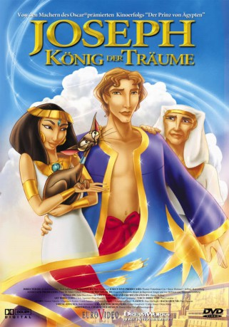

#10524 Joseph - König der Träume
Alternativ: Joseph: King of Dreams (Englischer Titel)
 
 IMDB-Wertung: 6.5 / 10
IMDB-Wertung: 6.5 / 10  Metascore: 0
Metascore: 0 
Jakobs Lieblingssohn Joseph besitzt eine besondere Gabe: In seinen Träumen sieht er die Zukunft voraus. Seine Brüder, die ihn um die Bevorzugung des Vaters und die göttlichen Eingebungen beneiden, verkaufen den Jüngsten an Sklavenhändler nach Ägypten. In seiner neuen Heimat steigt Joseph mit Hilfe seiner Prophezeiungen bis zum ersten Berater des Pharaos auf. Doch ist sein Herz groß genug, auch Frieden mit den grausamen Brüdern schließen zu können?
Jahr: 2000
Dauer: 75 Minuten
FSK: 0
Land: USA Studio: Universal Pictures Home EntertainmentTonspuren: DTS - ,
Untertitel: Deutsch,
Auflösung: 1080p (1920x1080) Größe: 3246 MB
Genre: Drama, Abenteuer, Animation/Trick, Familie, Geschichte, Biographie, Musical
Regisseur: Rob LaDuca, Robert C. Ramirez
Drehbuch: Eugenia Bostwick-Singer, Raymond Singer, Joe Stillman, Marshall Goldberg
Soundtrack: Danny Pelfrey
Darsteller:
Datei: X:\Kinder Filme (G-M)\Joseph - König der Träume (2000, FSK0, 1920x1080).mkv seit 18.01.2019
Festplatte: Kinder-Filme+Trick
 Es gibt insgesamt 84 Filme in der Gruppe 'Kinder Filme (G-M)'
Es gibt insgesamt 84 Filme in der Gruppe 'Kinder Filme (G-M)'